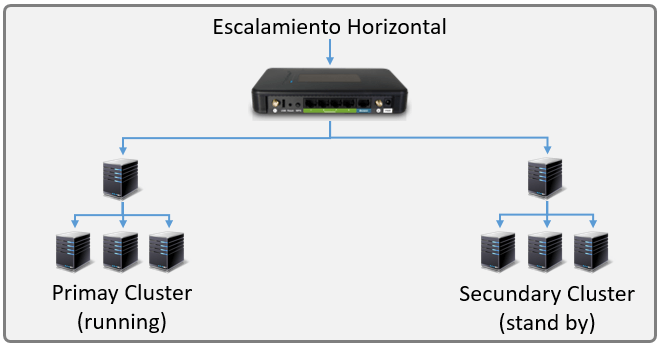
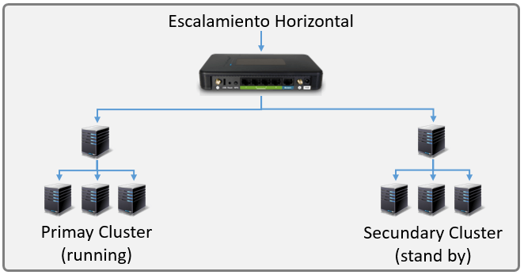

Escalabilidad
Escalabilidad
Es la capacidad del sistema para manejar un aumento en la carga de trabajo o en el número de usuarios sin degradar significativamente el rendimiento.
Un sistema escalable es capaz de crecer y adaptarse eficientemente a mayores demandas sin perder funcionalidad ni rendimiento.
Los sistemas cliente/servidor pueden ser escalados horizontal o verticalmente
El escalado horizontal significa añadir o eliminar estaciones clientes con un ligero impacto en el rendimiento
El escalado vertical significa la migración a una máquina servidora más grande y rápida o la incorporación de nuevas máquinas servidoras
 

Jessica Olvera Gordillo